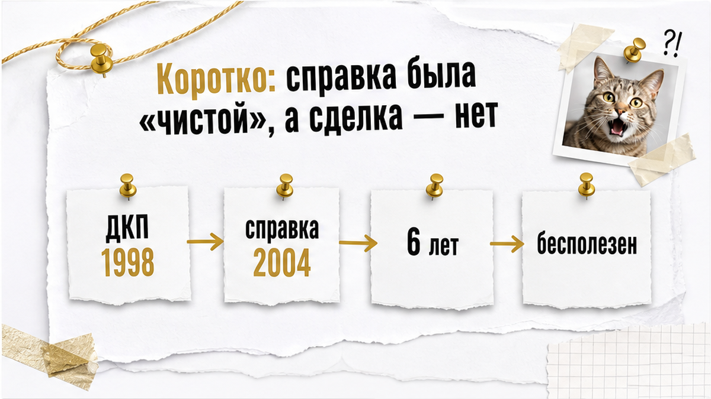
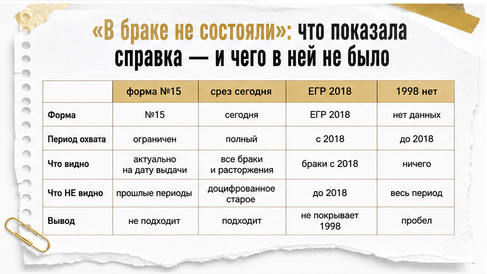
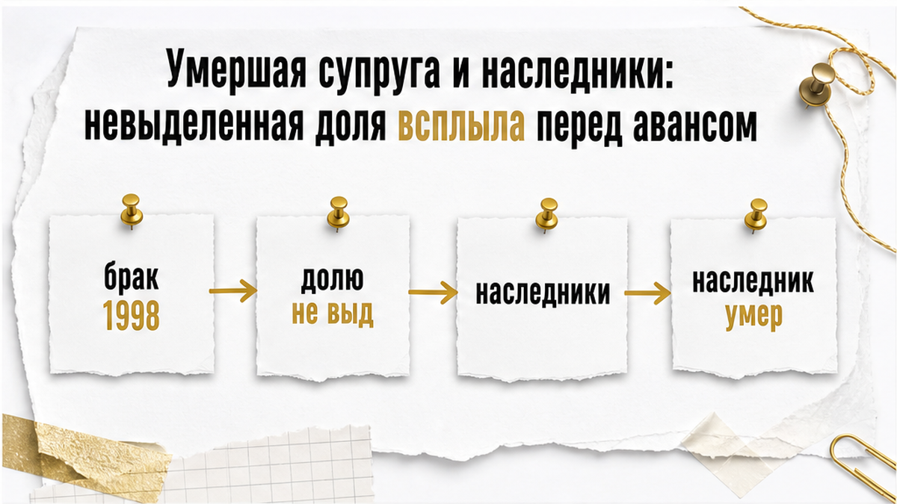
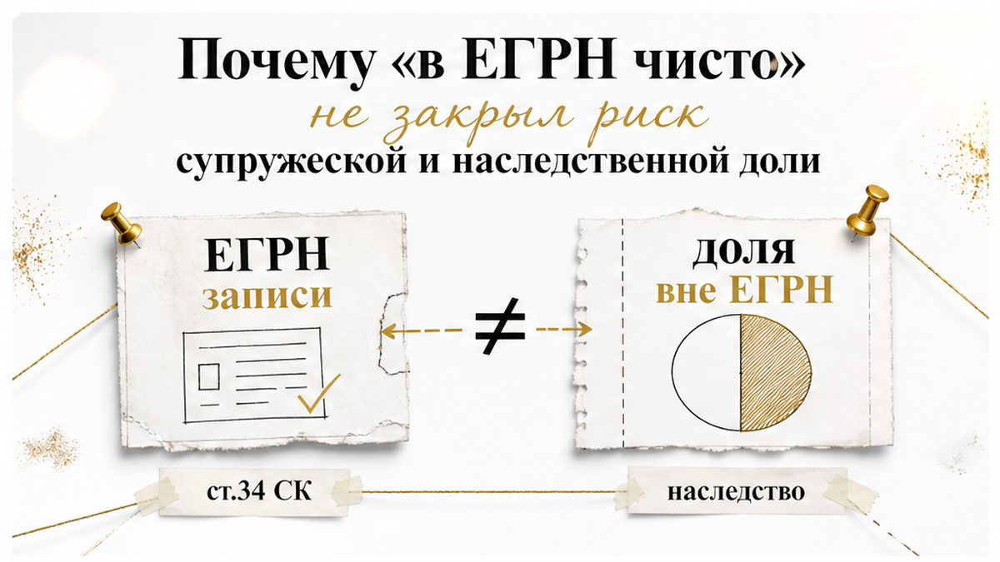
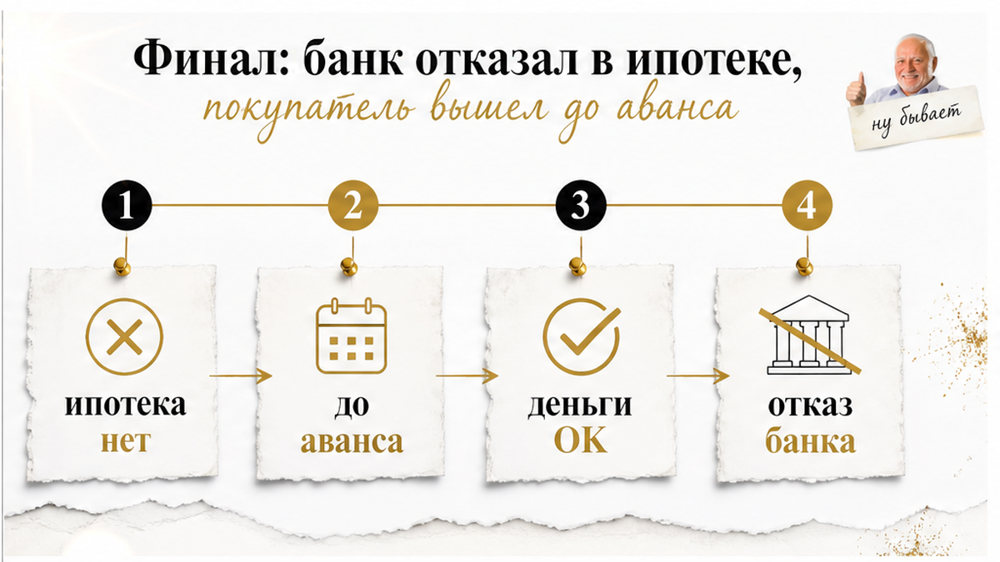
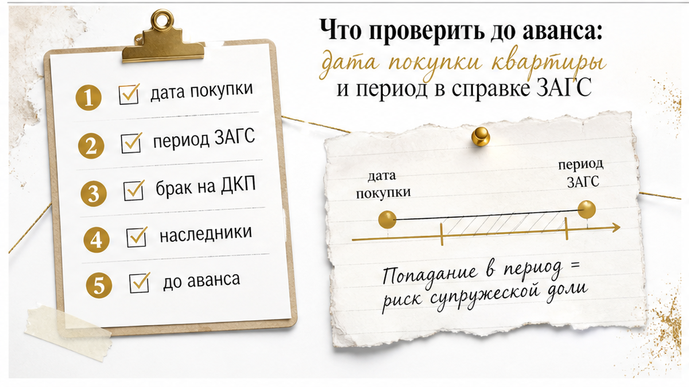
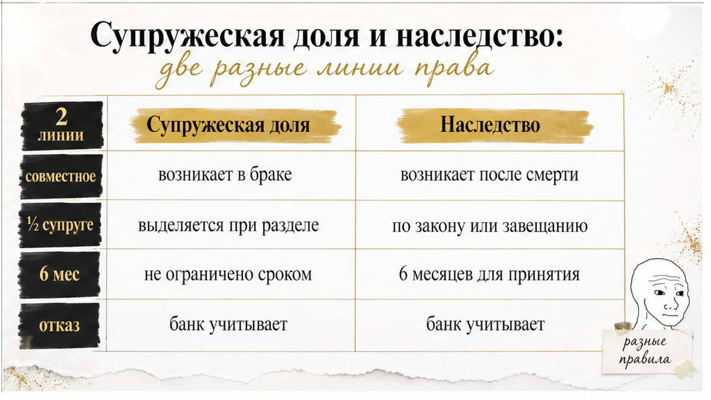

Справка ЗАГС была на руках. Настоящая, с печатью.
Выписка из ЕГРН — чистая: ни арестов, ни обременений, ни запретов на регистрацию. Двое собственников, брат и сестра, отвечали спокойно и без пауз. Цена согласована. Документы собраны. Покупатель ждал одобрения по ипотеке и уже мысленно расставлял мебель.
Сделка развалилась до аванса. Банк отказал, продавцы приводить документы в порядок не захотели.
Всё сломала одна строчка, которую читают глазами, но не читают головой: период, за который выдана справка.
Меня зовут Святослав Шакин, я риэлтор в Тюмени. Разбираю этот случай не потому, что он редкий, а потому что он до скуки типовой для вторички старше двадцати лет. И потому что покупатель в нём всё сделал правильно — он остановился до денег.
TL;DR — коротко, если читаете прямо перед авансом:
Разбираю такие случаи по документам, до аванса. Если у вас на руках выписка ЕГРН и справка продавца, а понимания «закрывают ли они историю квартиры» нет — напишите, посмотрю:

Всё противоречие этой истории влезает в одну фразу: документ был подлинным, действующим и абсолютно бесполезным для конкретного вопроса.
Покупателя волновало одно. Не появится ли у квартиры второй собственник, о котором сегодня не знает никто — включая Росреестр.
Квартира куплена в 1998 году. Значит, и вопрос звучит так: состоял ли продавец в браке именно в 1998-м. Справка отвечала про период с 2004-го. Между этими двумя датами шесть лет — и в них уместилась вся проблема.
Это не хитрость и не подделка. Так устроен архив: он выдаёт то, что у него есть, и за тот период, за который есть.
Обычный покупатель слышит «архив только такую справку даёт» и успокаивается — звучит же убедительно. Риэлтор кладёт рядом два числа: год начала периода в справке и год приобретения квартиры. Если первое больше второго — справка не закрывает риск. Она просто про другое время.

Устный ответ продавцов был категоричным: в браке не состояли. Справка воспринималась как подтверждение слов. Подтверждала она гораздо меньше.
Что такая справка обычно даёт:
Следствие простое, но неочевидное. Дело не в форме и не в том, что справки «бесполезны» — справка ЗАГС остаётся нормальным рабочим документом. Дело в периоде. Документ, начинающийся с 2004 года, физически не может сказать ничего про 1998-й. Он не врёт. Он молчит.
Дальше включается психология сделки. Покупатель задал правильный вопрос, получил в ответ бумагу и поставил галочку: закрыто. Продавцы, скорее всего, тоже искренне считали вопрос закрытым.
Настоящая проверка началась, когда документы ушли в банк и кто-то сверил дату основания права по ЕГРН с началом периода в справке.
Я видел, как сделки останавливались ровно по этой механике — когда реальность продавца не совпадала с бумагой. Например, когда на встречу приехал один человек с доверенностью, а собственников оказалось четверо. Здесь всё то же, только вместо доверенности справка, которую посмотрели все, а сопоставил с датой — никто.

Оказалось, что на дату покупки квартиры в 1998 году один из продавцов состоял в браке. Дальше история разворачивается быстро и неприятно.
Супруга умерла. Наследники у неё остались — от разных браков.
Супружескую долю в квартире при жизни никто не выделял: ни соглашения о разделе, ни судебного решения, ни отдельной записи в реестре. Наследство, по обстоятельствам дела, приняли фактически — без нотариуса и свидетельства, но действиями. А права на долю в квартире не оформили.
И это не конец цепочки. Один из наследников тоже умер. Круг людей, у которых теоретически может быть притязание на часть квартиры, стал не просто шире — он стал многослойным. Проверить его по одной выписке из ЕГРН невозможно в принципе: этих людей в реестре нет.
Только не путайте это с привычным наследственным сценарием, где квартира получена по наследству и кто-то из наследников не оформил отказ. Там линия видна с первой минуты: правоустанавливающий документ — свидетельство о праве на наследство, и сразу понятно, где копать.
Здесь основание права — обычный договор купли-продажи 1998 года. Наследственная составляющая спрятана слоем глубже: сначала брак, потом совместная собственность, потом смерть супруги — и только потом наследники.

Выписка по этой квартире была спокойной. Собственники — брат и сестра. Обременений нет. Арестов нет. Запретов на регистрацию нет.
Именно на неё продавцы и ссылались, когда покупатель начал задавать вопросы про 1998 год. Звучало логично: «были бы у кого-то права — было бы видно в реестре».
Не было бы.
ЕГРН отвечает на другой вопрос. Он показывает актуальные записи: кто числится собственником сегодня и что висит на объекте сегодня. Он не рассказывает, как право сложилось и кого по дороге не внесли.
А в этой истории оба риска — ровно из той категории, которая в реестр не попадает.
Первый — супружеская доля. Имущество, купленное в браке, по общему правилу совместное (ст. 34 СК РФ). Это право возникает в силу закона, отдельной записи не требует. В выписке может стоять один человек, а режим у имущества — совместный. Значение имеют дата приобретения, основание и наличие брачного договора. Ничего из этого в выписке нет.
Второй — наследство. Принять его можно не только через нотариуса, но и фактическими действиями (ст. 1153 ГК РФ). Наследник, который так и не пришёл за свидетельством и не зарегистрировал долю, в ЕГРН тоже не появится.
Здесь важная деталь, которую путают чаще всего: сам факт, что человек был совладельцем или жил в квартире, автоматически не означает фактического принятия наследства. Это разные вещи. Разбираются они по документам и обстоятельствам, а не по общему впечатлению от разговора на кухне.
Вывод, который я повторяю на каждом просмотре: отсутствие записи в ЕГРН не доказывает ни наличия, ни отсутствия прав третьих лиц. Чистая выписка — это отсутствие видимых препятствий для регистрации перехода права. Не заключение о том, что история собственности закрыта.
Обычный покупатель читает выписку как приговор суда: чисто — значит, всё. Риэлтор читает её как справку из одного окна: здесь ответили на один вопрос, остальные надо задавать в других местах.
Ту же механику я разбирал в кейсе, где документы продавца были формально в порядке, но не совпадали с реальным составом правообладателей: доверенность не броня — продавец прилетел один, а квартиру продавали четверо. Схема одна и та же. Бумага отвечает на вопрос, который никто не задавал.

Дальше история пошла по короткому маршруту.
Покупатель предложил очевидное: привести оформление в порядок до сделки. Разобраться с супружеской долей умершей супруги, определить круг наследников, оформить их права — и уже потом выходить на продажу. Долго, местами через нотариуса, местами через суд. Но выполнимо.
Продавцы отказались.
По-человечески их позицию понять можно: справка есть, выписка чистая, квартира почти тридцать лет в собственности, покупатель придирается. Перекраивать цепочку прав ради одной сделки они не стали.
А потом сделку остановил вообще не покупатель. Банк отказал в ипотечном одобрении по этому объекту.
Здесь я сразу оговорюсь, чего утверждать не буду. Это факт конкретной истории, а не универсальное правило. Внутренние критерии банка мне неизвестны, приписывать ему логику я не стану и обещать, что в похожей ситуации откажут — или не откажут — тоже. Банк принял решение по своей процедуре. Оно просто совпало по времени с тем, что вопросы к правовой истории объекта остались без ответа.
Покупатель вышел из сделки до передачи аванса.
Вот эта строчка для меня в кейсе главная. Деньги не ушли. Не было расписки, которую потом отрабатывают перепиской и претензиями. Не было спора о том, кто виноват в срыве и кому что возвращать. Отказ банка сработал как внешний стоп-сигнал, и покупатель успел им воспользоваться.
Разница между «вышел до аванса» и «вышел после» — не оттенок. Это два разных сюжета.
Первый заканчивается потерянным временем и следующим просмотром в субботу. Второй — вот этим: расписку на квартиру написали, а денег на счёте нет.
И точка выхода почти всегда видна заранее. В другом кейсе сделку удалось остановить за 48 часов до внесения задатка — квартиру к тому моменту уже подарили дочери.
Отказ банка здесь — не повод считать покупателя тревожным. Повод считать, что он остановился вовремя.

Теперь то, что стоит унести на свою сделку. Не чек-лист «10 документов», а разбор того, где именно история дала сбой.

Продавцы говорили: «квартира наша, мы её купили». Формально — правда. Только за словом «наша» стоят две разные линии права, и их путают почти всегда.
Линия супружеская. Имущество, приобретённое в браке, по общему правилу совместное (ст. 34 СК РФ). Значение имеют не фамилии в выписке, а дата и основание приобретения плюс брачный договор, если он был. Квартира куплена по ДКП в 1998 году, один из покупателей тогда состоял в браке — вопрос о совместной собственности возникает сам, без чьего-либо желания.
Линия наследственная. Включается позже, когда супруг умирает. И тут подмена: людям кажется — «умерла, значит всё осталось мужу». На деле половина совместно нажитого это супружеская доля пережившего супруга, в наследственную массу она не входит. Вторая половина входит и делится между наследниками. Какие получатся доли — зависит от состава наследников и от того, что делали с оформлением. Универсальной формулы «у умершего супруга ровно половина» нет, и выводить её я не стану ни здесь, ни для вашей сделки.
Дальше неудобный узел. Наследство принимается и фактическими действиями (ст. 1153 ГК РФ): жить, платить, содержать. Срок принятия — шесть месяцев (ст. 1154 ГК РФ), но у того, кто принял фактически, срок обращения за свидетельством не ограничен. Человек может «ничего не оформлять» двадцать лет — права от этого не исчезают. И отказаться задним числом во внесудебном порядке после фактического принятия не получится: это вопрос порядка, а не доброй воли сторон. Плюс один из наследников умер — цепочка не рассасывается, она удлиняется.
Слева — что говорят на просмотре. Дальше — что фраза подтверждает, чего не закрывает и куда смотреть вместо неё.
| Фраза на просмотре | Что подтверждает | Что остаётся открытым | Куда смотреть |
|---|---|---|---|
| «В браке не состояли, вот справка ЗАГС» | Справка выдана, период указан | Семейное положение на дату приобретения | Первая строка периода против года покупки |
| «Архив только такую справку и даёт» | Ограничения конкретного запроса | Незакрытый интервал до начала периода | Уточнённый запрос; ЕГР ЗАГС ведётся с 01.10.2018, ранее — архив |
| «В ЕГРН чисто» | Нет зарегистрированных ограничений на дату выписки | Невыделенная супружеская доля, права наследников вне реестра | Основание права: чем, когда, кто был в браке |
| «Супруга умерла давно, всё неактуально» | Факт смерти и давность | Фактическое принятие наследства без регистрации доли | Кто наследники и что происходило с имуществом после смерти |
| «Наследники подпишут отказ» | Готовность договариваться на словах | Невозможность внесудебного отказа после фактического принятия | Позиция нотариуса по ситуации, а не обещание продавца |
| «Форма №15 есть, этого достаточно» | Нет регистрации брака на момент выдачи | Прошлые периоды, включая дату сделки | Совпадение периода документа с нужной датой |
Ни одна строка не говорит «продавец врёт». Проблема тоньше: документ бывает подлинным, действующим — и не отвечающим на тот вопрос, ради которого его показывают.
Проверяю период справки ЗАГС против даты покупки — до аванса, не после.
Пишите в Telegram или в MAX: скину список того, что смотрю в цепочке прав на вторичке в Тюмени.
Большинство сделок со вторичкой проходят нормально. Отказ банка здесь — факт конкретного кейса, а не правило: внутренних критериев банка я не знаю. Но есть сигналы, после которых я не двигаюсь дальше без разбора цепочки прав.
Останавливаться — до аванса и до подачи в банк. Единственная точка, где выход стоит времени, а не денег. У меня был кейс с остановкой за 48 часов до задатка и другой — с уже написанной распиской, где спасло только то, что деньги не ушли со счёта. Была и история с доверенностью: бумага настоящая, состав собственников — другой. А наследник, который не отказался, появляется ровно там, где его «давно нет».
Нашли разрыв — не считайте доли на калькуляторе. Зафиксировать непокрытый период, выяснить, кто и как принимал наследство, получить позицию нотариуса — и только потом решать. Иногда путь к сделке есть. Иногда продавцы просто не хотят этим заниматься, и честный ответ — уходить.
Материал проверен: Святослав Шакин, личный риэлтор в Тюмени. Ориентир для покупателя, не индивидуальная юридическая консультация.